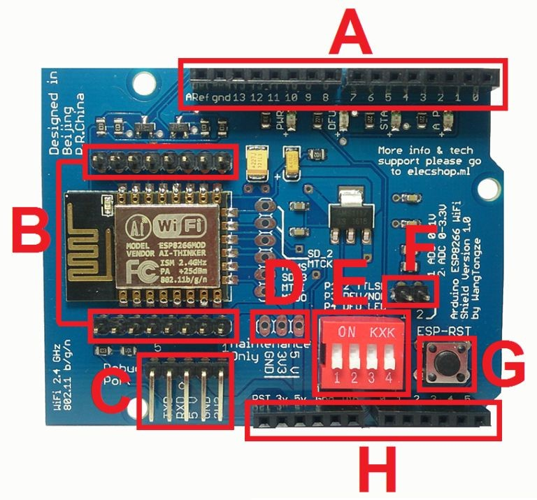
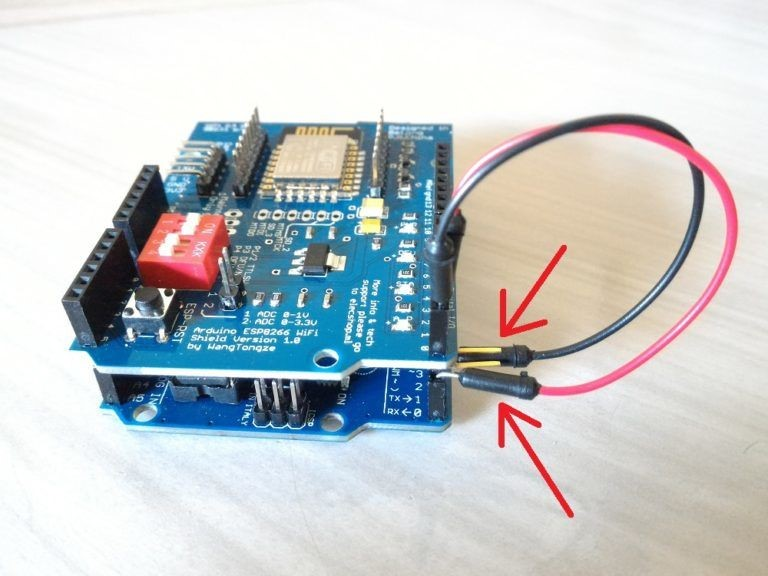

ESP8266 ESP-12E UART Wireless WIFI Shield TTL Converter без осложнений
Это руководство предназначено, чтобы помочь людям, которые приобрели ESP8266 ESP-12E UART Wireless WIFI Shield TTL Converter и не знают, как использовать его с Arduino.
Эта инструкция была разделена следующим образом:
Шаг 1. Знакомство с ESP8266 ESP-12E UART Wireless WIFI Shield TTL Converter для Arduino
Шаг 2: Обновление прошивки
Шаг 3: Shiald, Shield, More и Moer? Это имеет значение?
Шаг 4: Shield Moer - Решение последовательной связи RX / TX
Шаг 5: Веб-сервер с ESP8266 ESP-12E UART Wireless WIFI Shield TTL Converter для Arduino
Я рекомендую вам прочитать все шаги, чтобы узнать как можно больше об этом щите.
Шаг 1. Знакомство с ESP8266 ESP-12E UART Wireless WIFI Shield TTL Converter для Arduino
Shield WiFi ESP8266 позволяет легко подключать Arduino к сетям WiFi через ESP8266. При его использовании больше не требуется монтировать цепь с несколькими компонентами и проводами для соединения ESP8266 с Arduino, просто подключите плату к Arduino, расположите тракт DIP-переключателя в соответствии с режимом работы экрана и запрограммируйте Arduino на подключаться к WiFi сетям. Кроме того, плату можно использовать без Arduino, так как она имеет все распиновки ESP-12E.
На щите есть информация о том, что он был создан человеком по имени WangTongze и кто владеет правами на него - elecshop.ml. Первоначально создатель щита пытался собрать средства для своего проекта через Indiegogo (сайт коллективного финансирования), но ему не удалось собрать деньги.
Особенности ESP8266 модели ESP-12E:
- 32-разрядная архитектура RISC
- процессор может работать на частоте 80 МГц / 160 МГц
- флэш-память 32 МБ
- 64 КБ для инструкций
- 96 КБ для данных
- Стандартный собственный WiFi 802.11b / g / n
- Работает в режиме AP, Station или AP + Station
- Имеет 11 цифровых выводов
- имеет 1 аналоговый вывод с разрешением 10 бит
- Цифровые выводы кроме D0 имеют прерывание, ШИМ, I2C и один провод
- Программируется через USB или WiFi (OTA)
- Совместимо с Arduino IDE
- Совместимо с используемыми модулями и датчиками в Ардуино
Ниже приведены основные характеристики этого щита:
- размер Arduino Uno R3 и пиннинга совместим с Arduino Uno, Mega 2560, Leonardo и производными;
- уменьшеные версии Arduino (например, Nano и Pro Mini) совместимы, но соединения должны быть выполнены с помощью перемычек;
- напряжение Arduino (5 В) используется для питания экрана;
- имеет регулятор напряжения AMS1117 3,3 В, поэтому напряжение 5 В, подаваемое Arduino, снижается для питания экрана без необходимости внешнего питания;
- он имеет встроенный преобразователь логического уровня, поэтому уровень Arduino TTL (5 В) не повреждает ESP8266, который работает с уровнем TTL 3,3 В;
- он имеет 4-позиционный DIP-переключатель, который служит для изменения режимов работы платы;
- доступные режимы работы: WiFi Shield для Arduino / отправка AT-команд через Arduino / обновление прошивки через USB Serial external / standalone converter;
- имеет индикаторы (PWR / DFU / AP / STA);
- поскольку он имеет формат экрана, он позволяет вставлять другие экраны и модули;
- имеет кнопку ESP-RST для сброса ESP8266;
- вывод АЦП ESP8266 доступен на плате в двух вариантах: первый на выводе с диапазоном считывания от 0 до 1 В, а второй в диапазоне от 0 до 3,3 В.
На изображении выделены основные части щита:

A (ЦИФРОВЫЕ ПИНЫ): последовательность пинов, используемая Arduino.
B (ESP8266 PINS): ESP8266-12E и их соответствующие контакты. На оборотной стороне платы есть номенклатура штифтов.
BC (EXTERNAL SERIAL USB ADAPTER CONNECTION): последовательность контактов, используемая для подключения внешнего последовательного USB-адаптера для обновления прошивки или отладки ESP8266.
D (Штыри технического обслуживания): последовательность из трех контактов, обозначенная как «Только техническое обслуживание» и используемая для проверки того, что регулятор напряжения получает и правильно подает напряжения. ЭТО НЕ ДОЛЖНО ИСПОЛЬЗОВАТЬСЯ В качестве ИСТОЧНИКА ПИТАНИЯ.
E (DIP-ПЕРЕКЛЮЧАТЕЛЬ ДЛЯ ИЗМЕНЕНИЯ РЕЖИМОВ РАБОТЫ): четырехпозиционный DIP-переключатель для изменения режимов работы.
CONTACT 1 (P1) и CONTACT 2 (P2): используется для подключения RX (обозначенного P1) и TX (обозначенного P2) ESP8266 к контактам Arduino D0 (RX) и D1 (TX). P1 и P2 в положении OFF отключают соединение RX от ESP8266 до Arduino TX и TX от ESP8266 до Arduino RX.
CONTACT 3 (P3) и CONTACT 4 (P4): используется для включения и отключения режима обновления прошивки для ESP8266. Для включения записи / загрузки прошивки на ESP8266, P3 и P4 должны быть в положении ON. Когда P4 находится в положении ON, загорается светодиод DFU, указывая на то, что ESP8266 включен для получения прошивки. Чтобы отключить режим обновления прошивки и установить ESP8266 в нормальный режим, просто установите P3 и P4 в положение OFF.
ПРИМЕЧАНИЕ. Все 4 контакта в положении OFF указывают, что ESP8266 работает в нормальном режиме вместе с Arduino.
F (AD8 FROM ESP8266): назначение контактов для АЦП ESP8266. Контакт, работающий в диапазоне от 0 до 1 В, и другой контакт, работающий в диапазоне от 0 до 3,3 В. Эти контакты будут использоваться только при использовании только ESP8266 (автономный режим).
G (ESP8266 RESET): кнопка, используемая для сброса ESP8266. Всякий раз, когда вы меняете положение DIP-переключателей, вы должны нажать кнопку ESP-RST.
H (АНАЛОГОВЫЙ ПИН И ПИТАНИЕ): последовательность контактов, используемых Arduino.
Этот экран имеет особенность в контактах P1 и P2 DIP-переключателя, и эта особенность, на самом деле, вызывает большие сомнения у людей, которые пытаются использовать экран.
По словам создателя щита, при подключении его к Arduino потребуется только 2 контакта. Этими выводами будут D0 и D1 (RX и TX Arduino соответственно), и, кроме того, контакты P1 и P2 DIP-переключателя на экране должны быть в положении ON для подключения.
В одном из немногих китайских документов, которые я получил об этом щите, создатель доски говорит:
P1 и P2 являются битовыми кодировщиками и используются для определения, подключен ли последовательный порт ESP8266 к Arduino D0 и D1.
В другом разделе документа упоминается:
Эта плата расширения поддерживает последовательную связь Arduino, подключая RX от ESP8266 к TX от Arduino и TX от ESP8266 к Arduino RX.
Выводы Arduino D0 (RX) и D1 (TX) соответствуют стандартному последовательному / USB-соединению, поэтому эти выводы остаются занятыми, когда мы отправляем код на плату или используем последовательный монитор. Поэтому, если контакты P1 и P2 экрана находятся в положении ON, ESP8266 будет использовать Arduino D0 и D1, и будет невозможно отправить коды или использовать серийный номер, поскольку он будет занят. Кроме того, для отправки AT-команд на экран необходимо, чтобы ESP8266 RX был подключен к Arduino RX, а ESP8266 TX был подключен к Arduino TX. Это произойдет, только если мы инвертируем соединения, как показано на рисунке ниже:
Смотрите, я согнул контакты D0 и D1 экрана и подключил Arduino D0 к D1 экрана и D1 Arduino к D0 экрана. При использовании соединения таким способом (Arduino используется в качестве моста соединения), я смог отправить AT-команды на ESP8266 и подтвердил то, что я уже вообразил.
Стандартная форма работы щита требует загрузки кода (например, веб-сервера или встроенного программного обеспечения) в щит, а другой код загружается в Arduino для отправки, получения и интерпретации данных, поступающих через собственный серийный номер. Более подробная информация об этой форме общения будет рассматриваться в следующих шагах.
В любом случае, эта функция экрана не вмешивается в его работу, так как мы обычно эмулируем последовательный порт на других цифровых выводах Arduino, чтобы мы могли иметь собственный серийный номер. Кроме того, если необходимо отправить AT-команды на экран, мы можем подключить его к Arduino через четыре кабеля или использовать последовательный USB-преобразователь.
Наконец, экран был очень устойчивым и облегчал сборку цепей. Я тестировал с Arduino Uno R3 и Mega 2560 R3.
На следующем шаге вы узнаете, как обновить / сменить прошивку щита.
�